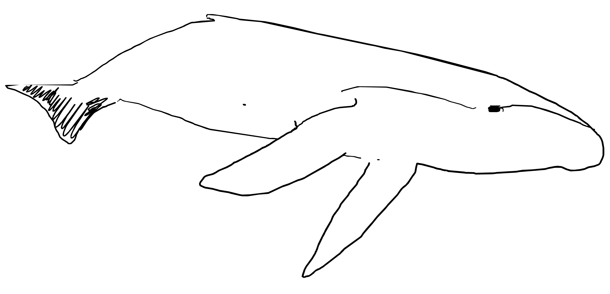

I’m an artistic researcher whose practice engages with space and
materials through research, fieldwork, writing, and making. I’m
intrigued by spaces that have been affected by external factors –
such as borders or large engineering projects - and how they
influence communities, culture and environment. These factors are
investigated through fieldwork: spending time with locals, visiting
industrial sites or refugees’ graveyards, forming a base for an
essay or physical outcome. With my work, I attempt to counter
dominant narratives and work with marginalised voices.
I work as an editor in a spatial-criticism platform Failed
Architecture, and have been part of the artistic research network
Baltic Lines, which explores the Rail Baltica megaproject. I have
participated in several group exhibitions, residencies and held one
solo exhibition.
Since 2024, I collaborate with spatial designer Darya Akhrameika on
Piedruja-Druja.
I am currently based in Amsterdam, the Netherlands.

exhibitions
2018
(18/07-30/07)
4K
VEF cultural district, Riga, LV
2020
(17/10-25/10)
Shapes of Play
Dutch Design Week, Amsterdam, NL
2021
(10/02-20/02)
Nothing that stays in space needs to be streamlined
De Bouwput, Amsterdam, NL
2021
(17/07-27/07)
Migration
Tallin cultural quarter, Riga, NL
2021
(20/08-15/09)
The Spirit of the Road
V36 design institute, Riga, LV
2021
(16/10-24/10)
A house is not, a home is not, a house, a home
Klokgebouw, Dutch Design Week , NL
2023
(20/03-25/03)
Refuge- fleeing, flowing, leaking
Stedelijk Museum, Amsterdam, NL
2023
(07/10)
Arty Party
Melkweg expo, Amsterdam, NL
2023
(21/10-29/10)
DDW x Rietveld Alumni: Convergence
Klokgebouw, Dutch Design Week, NL
2024
(12/01-22/03)
You Are a Leaf That Doesn't Know It is Part of a Tree
Gemeentehuis Urk, Urk, NL
2024
(12/10-27/10)
I Hope This Email Find You Well
with Baltic Lines Collective
In The Closet Gallery, Vilnius, LT
2024
(04/05-07/05)
There Is No River Without Sources
with Darya Akhrameika
Pakd gallery, Berlin, DE
2025
(11/07)
Hints of Red Fruit and a Touch of Sparkle
Het Resort, Groningen, NL
publications
2021
Rietveld Academie Journal
essay, drawing, Rietveld Academie Journal
2022
Hinterlands
essay, drawing
2022
Rietveld Academie Journal
fragment of a thesis, drawing
2023
Failed Architecture
essay and illustrations
2025
Fold.lv
essay and illustrations (with Darya Akhrameika)
2025
Latvijas Architektūra (Landscape of Defense Issue)
essay and illustrations (with Darya Akhrameika)
experience
2025
(20-21/09)
Thinking and Working Through Land: Practices with Grounds Marked by
Politics
Gathering, presentations, Nida Art Colony, Nida, LT (with Darya
Akhrameika)
2025
(may-july)
Pilot residency programme
Het Resort, site-specific art space, Groningen, NL
2025
(29/06-01/07)
Culture, Media and Resistance in a Polarising World
Workshop, Manchester University, UK (with Darya Akhrameika)